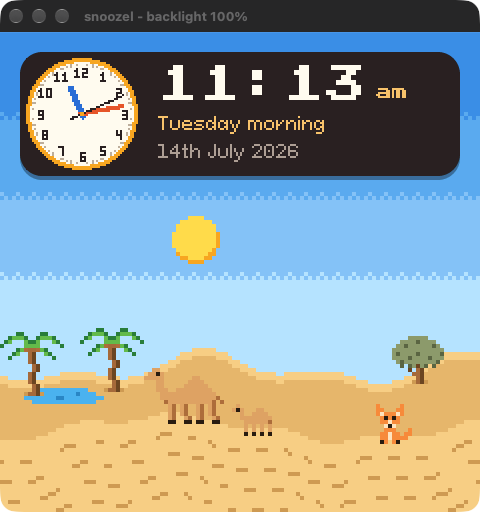

$ preflash run --board snoozel-4b.yaml preflash: building snoozel for snoozel-4b I (0) power: charger: pre 01, charge 04, term 11, volt 02 (ESP_OK) I (25) snoozel: boot rotation 0 from the sensor I (1653) desert: 1 frames, avg 0.1 ms, max 0.1 ms I (1778) clock: 1 face draws, avg 0.0 ms, max 0.0 ms I (61673) desert: 478 frames, avg 0.1 ms, max 0.9 ms I (62672) clock: 60 face draws, avg 0.0 ms, max 0.1 ms phase 2026-07-14 11:13:09 local, day, night 0.00 rtc 2026-07-14T10:13:09Z @sim brightness brightness: 100 (pwm 100, enable gpio43 high) @sim shot desert.bmp saved desert.bmp
